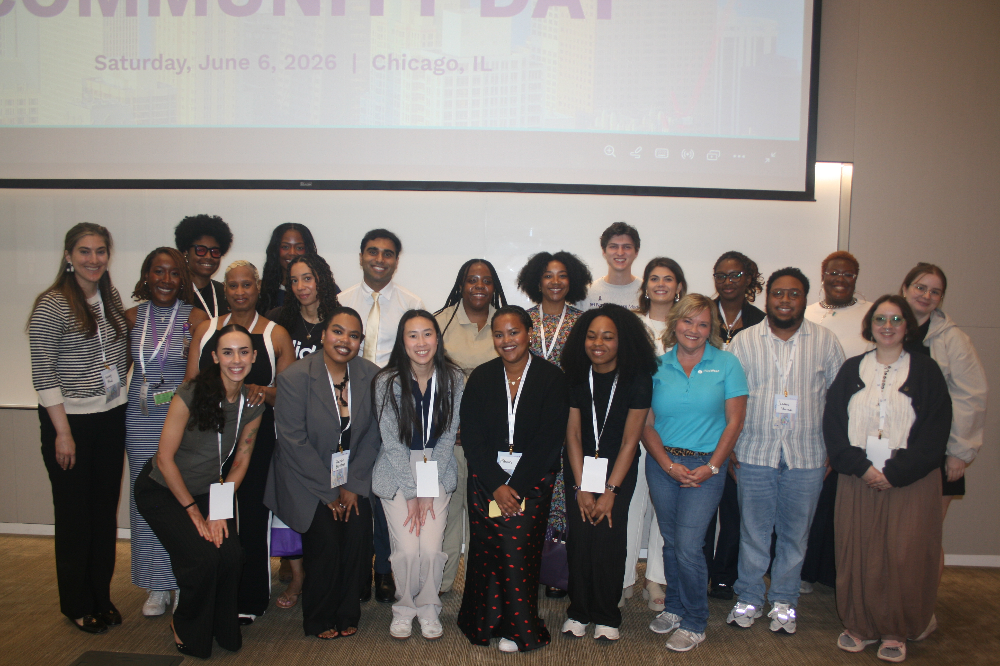

Trusted Education
Clear HS information for patients, caregivers, students, clinicians, and communities.
IAHSN provides holistic, patient-centered support for individuals impacted by Hidradenitis Suppurativa through advocacy, education, emotional wellness, community engagement, and empowerment-focused programs.
To provide holistic, patient-centered support for individuals impacted by Hidradenitis Suppurativa (HS) through advocacy, education, emotional wellness initiatives, community engagement, and empowerment-focused programs that improve quality of life and foster resilience.
Hidradenitis Suppurativa can affect far more than the skin. IAHSN centers the lived experiences of patients and families while working to make support easier to find, information easier to understand, and conversations about HS more compassionate.
We envision a world where individuals living with Hidradenitis Suppurativa have access to compassionate support, trusted education, meaningful community connection, and the resources needed to live with dignity, resilience, and hope.
Clear HS information for patients, caregivers, students, clinicians, and communities.
Support that recognizes the emotional, social, and practical impact of HS.
Programs and advocacy that help people build confidence, connection, and resilience.
Members of the IAHSN board and community gathered at HS Community Day at Northwestern to connect, learn, and continue building support for people affected by Hidradenitis Suppurativa.

IAHSN's Board of Directors helps guide the organization's mission, programs, partnerships, and community-centered work.

Chair
Treasurer
Board Member
Secretary

Education & Research
Community Engagement
Advocacy & Awareness
Whether you are living with HS, caring for someone with HS, studying healthcare, or looking for ways to support advocacy, education, wellness, and community, IAHSN welcomes connection.